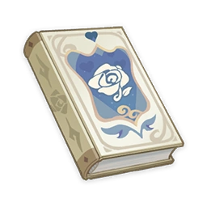

Teyvat & Unknown · Books & Literature
The Pale Princess and the Six Pygmies
This seven-volume Teyvat fairy tale contrasts the Night Mother’s dark land with a moonlit kingdom. Only Volume I is fully readable; the Abyss Order’s interest in its hidden secret remains unexplained.

A Seven-Volume Fairy Tale
The Pale Princess and the Six Pygmies is a seven-volume book collection catalogued in Mondstadt. Its in-game description says it is a fairy tale told throughout Teyvat. The title plays on Snow White and the Seven Dwarfs; it is not, by itself, evidence that the story retells a specific historical event.
Only Volume I is fully readable in the in-game Archive. It introduces the Night Mother and her barren Land of Night, then contrasts that darkness with the Moonlight Forest and its kingdom, where the inhabitants live under the moon’s light. The first volume sets the scene rather than giving the full story advertised by the series title.
The Remaining Volumes Stay as Short Summaries
Archive entries for Volumes II–VII provide only brief synopses: the Pale Princess meets the Light Prince; the pair decide to save the Moonlight Forest; they encounter the Six Pygmies; and the Pygmies’ plot unfolds through the final volumes. The last synopsis mentions the Night Mother’s prophecy but never gives its contents.
Those short cards do not support detailed claims about the prince’s identity, the Pygmies’ motives, or the story’s final outcome. The collection names no author, and the game does not identify the story’s characters with specific people or civilizations in Teyvat.
Why the Abyss Order Pursues It
During Lisa’s Story Quest, the Abyss Order tries to take Volume I because it believes the book contains a secret. The quest never reveals what that secret is. That interest invites comparison with other records sought by the Abyss Order, but it does not prove that the fairy tale is a Khaenri’ahn chronicle or a prophecy about current characters.
Keep the distinction clear: the game confirms the Order’s interest and the book’s fairy-tale contents; any allegory about Khaenri’ah, the Moon Sisters, the Descenders, or the Archons is an interpretation, not a revealed key to the plot.
This is an original CoreGG reading guide, not an official HoYoverse article or a reproduction of the game text. Source links below identify the records used so you can check the original context.
Sources & references
Check these sources for the original game text and reference trail.